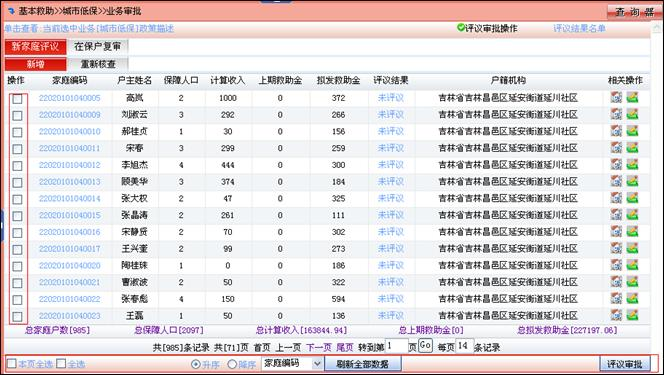
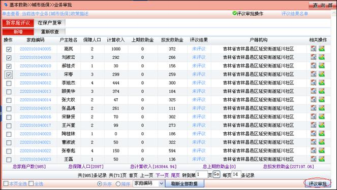
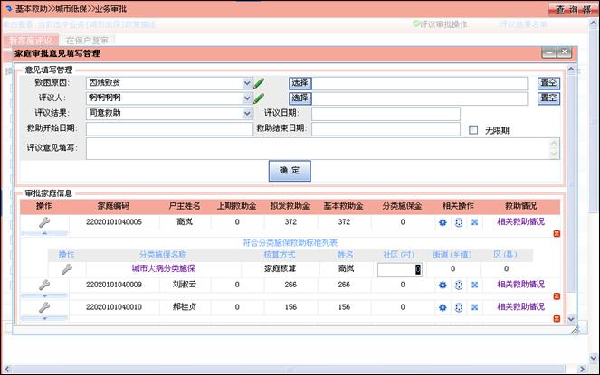

批量审批
当业务允许批量操作时，在选取家庭时的按钮发生改变，如下所示

单个审批时，选取家庭为单选按钮，批量审批时为复选按钮，选择多户家庭，如下所示

点击“评议审批”按钮，进入审批页面，

填入审批信息，点击“确定”按钮，这几户家庭审批完毕。
注：如果此家庭有分类施保，填入分类施保金额。
批量审批流程与单个审批相同。
注：城乡混居家庭的救助
城乡混居家庭指共同生活的家庭成员包含非农业户籍和农业户籍人员，非农业户籍和农业户籍人员应按照城市和农村低保标准分别计算差额给予补助。
l 家庭成员按照救助标准、核算公式进行救助金的核算；
l 通过个业务标准把家庭拆分为二(城市和农村)，同时通过不同的核算方式进行救助金的核算；
l 相应的业务审批只能审批相应标准的家庭和家庭成员；
l 成员信息项设置城市、农村项目，家庭信息项也设置相应的项目。